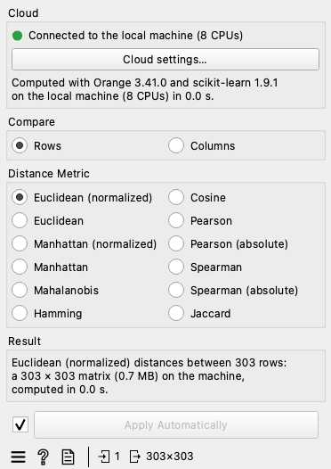

Distances between the rows or the columns of a cloud table, computed and kept on the machine.

Like every Cloud widget, it has a Cloud box at the top: whether a machine is connected, Cloud settings…, and what the last job ran with, how long it took and what it cost. See Cloud widgets.
The options and metrics are those of Orange's Distances, computed with Orange's code: compare rows or columns, and choose the metric. The matrix stays on the machine; Orange's own widgets can't take it.
A matrix of n rows takes n × n × 8 bytes: 18.6 GB for 50,000 rows. Computing it takes more, from 1.2 times that (Manhattan) to 5 times (Spearman). Orange's own Distances stops at 20,000 rows; here the limit is the machine's memory. If the machine hasn't enough, the widget says so and names a machine size that fits.